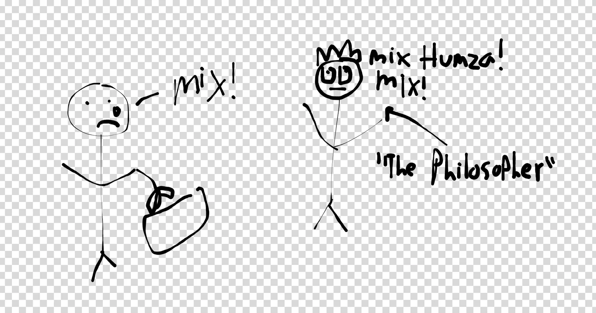
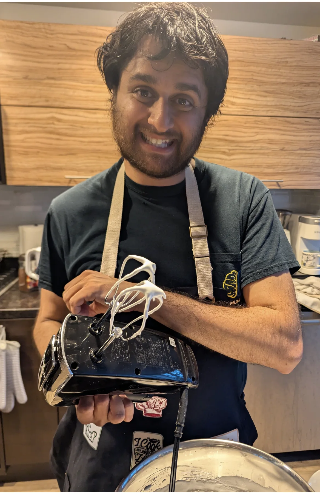
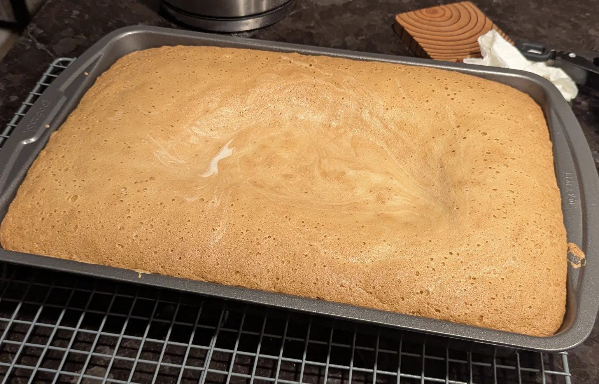
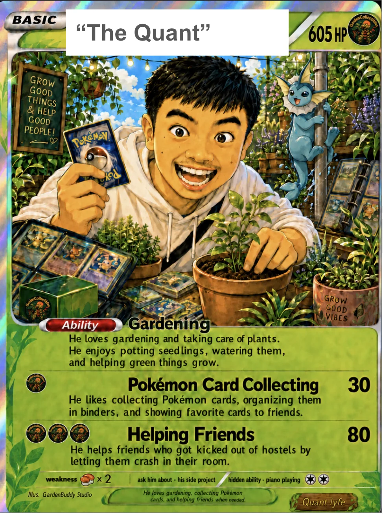
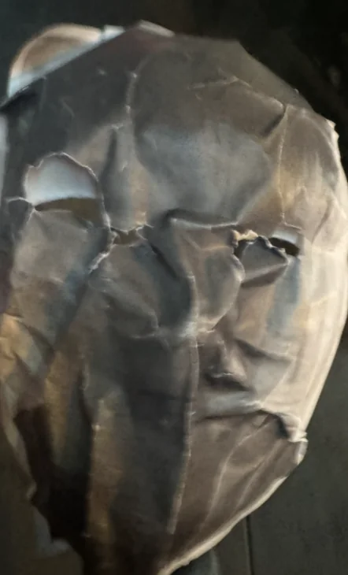
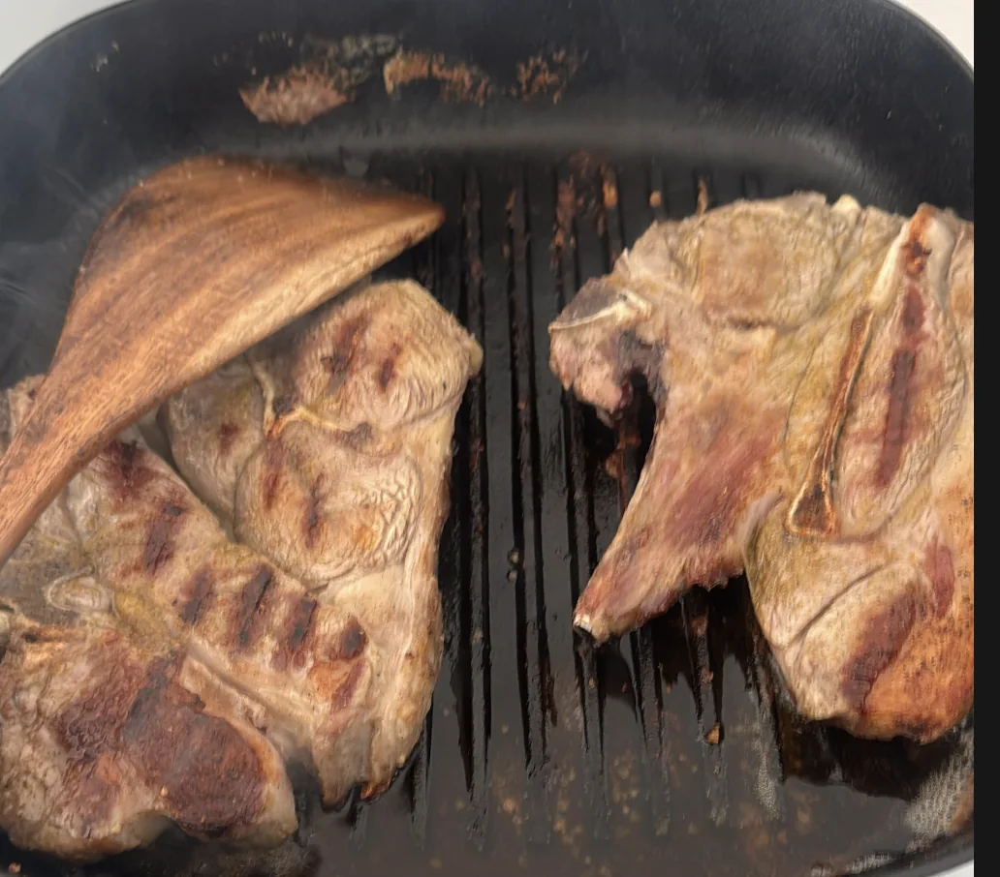
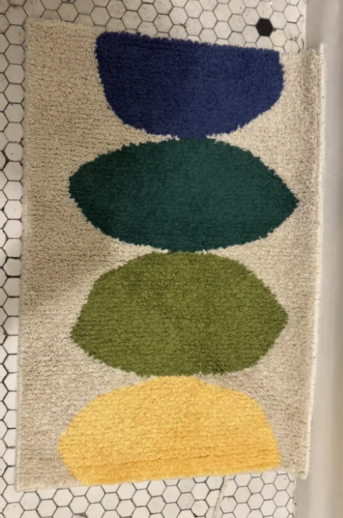

Shoutouts
Happy birthday to “The Quant”! I really appreciate how always down you are to do a wide variety of random bullshit with me and your wide-ranging curiosity on a large number of topics. You’re a really great friend and it’s truly been an honor. Here’s to many more adventures. And may you always have golden retriever energy :D (yes I will run that joke into the ground).
Happy birthday to “The Juggler”. You’re a bastion of positive energy and craziness. Really awesome that this year you got your solo pilot’s license and got promoted to senior engineer at the drone place
Monday
Today was a rather slow day. I went into the office and did the thing. After doing the thing for many hours I went home and chilled.
Tuesday
After another stint in the mines I went to standup classes for the first time in years. Back during the pandemic I took standup classes at SF Comedy College. I did a lot of zoom standup which was quite a bit of fun and became one of my main pandemic hobbies along with walking. I last did some open mics in 2023 but I hadn’t really touched it in years. I got inspired after “The Enabler” started doing standup at the same place and I thought I would get back in the fray and try to shake off the rust.
I wish I prepared for it slightly more as the class is basically getting up and doing a 5 minute set of which I only had a couple minutes written. For the rest of the set I did some crowdwork which was ok but not great. I think with a bit of time I should be able to shake off this rust and get back into decent shape. That being said I was happy with the jokes I did write though. I won’t be sharing them here because I may actually do a show and invite you all and I would want it to be as fresh as possible.
“The Enabler” had a great set that I really liked. I won’t spoil anything about it for the folks here who are friends with “The Enabler” and may be coming when he performs live but I’ll just say his passion for standup is clear and he’s a very driven person.
Wednesday
Once I finished fighting the good fight for our VCs I got a summons to help make a tres leches cake for “The Philosopher”. It’s “The Juggler’s” birthday tomorrow and I figured it would be good for me to level up my baking skills from non existent to possibly functional.
Before the bake actually starts though I went to get a bunch of the ingredients from Safeway. Shopping at Safeway really makes me appreciate the Whole Foods and Gus’s market I have right next to my apartment. They are much nicer shopping experiences. For one thing there isn’t anything locked behind a door that I need customer service to unlock for me, and they don’t even give it right away; instead they take it and I have to ask for it when I go to check out. Speaking of checking out, the lines at Safeway are much longer than Gus’s or Whole Foods. What would be a frustratingly long line at Gus’s is an average line at Safeway. Alright I know what you’re thinking, we’ve made it to the register and checked out, this part should be easy to handle right? Well I’m glad you said the word handle because GUESS WHAT. THE BAGS AT SAFEWAY DON”T HAVE FUCKING HANDLES. WHAT KIND OF RETARD WAS RESPONSIBLE HERE?! I had to carry my bags with no handle for the half hour plus walk it took for me to get to “The Philosopher’s” place and it was a terrible experience. I actually did some research into this and apparently Safeway is blaming a supply shortage forcing them to cut out the handles. BUT AGAIN, GUS’S AND WHOLEFOODS STILL HAVE HANDLES. If any Safeway executive is still reading this then get some handles ya ding dongs.
That’s enough negativity for now. Let’s focus on the cake. After getting to “The Philosopher’s” place we start baking the cake. Most of the process is surprisingly straightforward. You measure out ingredients, pour them into things, and mix them together. There were 3 things during the process which surprised me.
The first was separating the egg whites from the yolk. To do this you crack the egg and put it in your hand. Then over a bowl you keep running the egg between your hands until the eggwhite falls off and you are only left with the yolk. Then you take the yolk and put it in a separate bowl.
The next surprising thing came later in the process when we had a mixture of flower and milk that we had to whisk with a whisker. To do this you have to keep whisking the mixture until you see stiff peaks. What that means is when you take the whisk and put it in the mixture you should see some of the mixture in the shape of a peak. This is a proxy for how well everything is mixed which impacts the taste and texture. This was much harder than anticipated as getting the peaks took forever. The recipe said we only needed to whisk for about a minute but I think it must have been at least 10. It was a furious bout of mixing with me and “The Philosopher” handing off the mixer at different points.


The last surprise came in the form of the can opener. “The Philosopher” said “If you gave a poodle opposable thumbs it could figure out how to do this.”. After watching “The Philosopher” do it I found that I am less intelligent than the average poodle because I needed quite a bit of help to figure this out. It took me 2-3 tries to finally get it right and even then I don’t think I’m winning the world’s most elegant can opener any time soon. But this is a can opener not a can’t opener and eventually the job got done.
Everything else was pretty straight forward and by the end we struck cake! (Note the final cake had more milk coated on top but I didn’t get a picture of that :( ).

Thursday
Another day another NCCL am I right? Once I got the aforementioned NCCL I went to get some stuff I needed for “The Quant’s” birthday tomorrow and went home to get ready for “The Juggler’s” birthday party. Normally I don’t consider my commutes notable in their own right but on my N-line ride both to and from my apartment I had a run in with a different friend being “The Filmmaker” and one of the Hopkins people who doesn’t have a nickname (she’s friends with “The Fisherwoman” and “Mr. Greenflag” though).
Then I go to “The Philosopher’s” house for the birthday party. There we have “The Philosopher,” “The Orchestra,” “That’s nuts,” “The Mosher,” “Hand in hand,” “The Awepartment,” “The Juggler’s girlfriend,” and some other folks.
“The Awepartment” made some great steak. There’s a reason he’s one of my cooking teachers and one of the great cooks in the trash tales pantheon.
When the steak was just about ready “The Philosopher” told us to hold on, I asked to what, and “Hand in hand” offered his hand which I then held for the next 2 hours. The bit here was to hold on until someone told us to stop which was quite a bit of fun. We held hands while eating steak, talking to guests, and even when he needed to use the restroom. Before anyone asks, this was #1 not #2. If it was #2 the bit would have been immediately over. It’s been a while since I did a bit that ridiculous and stupid so I greatly appreciated it.
Eventually after 2 hours “That’s nuts” told us to release and the bit came to an end. I thought about keeping it going but then thought it would be funnier to stop once immediately told to.
Once that was done we brought out the Tres Leches cake. As it turns out, “The Juggler’s girlfriend” also made a tres leches cake which means we really had seis leches. That’s a lot of leches. I couldn’t eat any of the leches of course but from what everyone said it seemed like everyone quite liked it!
It seems like I’ve made progress in the cooking and baking department though which is good! I did have a goal I failed at though, which is getting to know one of “The Awepartment’s” coworkers who I thought was cute. One thing I was told is that I lack rizz and need to get some more of that. I’m not sure how though. I checked on Amazon and it wasn’t available even with prime. Teemu perhaps? Goodwill?
Friday
There were a number of ducks that needed to be shepherded to their respective rows. I shepharded most of them but decided to say fuck it and left the duck shepharding a bit early today because the weather was nice and I had a few more things I needed to get for “The Quant’s” birthday.
First I needed to get part of “The Quant’s” gift which was a custom made Pokemon card in his honor.

For a bit of context, “The Quant” loves collecting and selling Pokemon cards and it’s one of his major hobbies. To that end I made the type the emblem of his instagram page for his pokemon cards. Secondly I wanted to mention some of his hobbies and interests including Gardening and Pokemon Card collecting as primary ones and piano down below as a hidden ability). Also one time when on a trip he helped out a friend who got kicked out of a hostel and also got banned from that series of hostels world wide.
He also has a dislike of sushi which is why it’s considered a weakness down below. And his birthday is June 5th hence the 605 HP.
The next thing I did was try to make a mask of “The Quant” that I could wear. Unfortunately I’m not the best with crafts so it didn’t quite turn out the way I wanted

The way I planned to make this was take the mask, put some modge podge on it, put the picture of “The Quant” over that, and then put modge podge over that but sadly the picture wrinkled and it was hard to make out who it looked like. Instead I got told I looked like the saw killer in the best case or black face in the worst case. On top of that I should have picked a mask with a mouth hole. I could breathe but it was hard for people to hear what I was saying. Originally my vision was to wear the mask for the whole party but I couldn’t make it further than 10 minutes before the lack of understandability of my words caused me to give up.
For the party itself its “The Quant,” “The Raja of Rhythm,” “The Yogi,” “The Pickleballer,” “The Fisherwoman,” “The Shadow Brigade,” and “The Taco”. We go to Taishoken to get some ramen and hang out for a while. Amusingly there are at least 3 other birthdays being celebrated there. I asked the waitstaff to do a happy birthday song for “The Quant” and the way they do it is quite funny. They abruptly start playing some very loud music that brings everything else to a halt and bombards us with a happy birthday song.
Then we go to Garden Creamery for some ice cream. The pluot sorbet is quite good and I highly recommend it.
Then the party wraps up and I walk “The Raja of Rhythm,” “The Fisherwoman,” and “The Philosopher” home in that order.
Saturday
Today I decided to mix up my morning run club and go to Midnight Runners for the Saturday morning run with “The Dentist”. Well ok that’s a lie I only go for the first mile at most because I need to leave for trash pickup but it was nice to see “The Dentist" and catch up for a bit. What was less nice was the hill in Noe Valley we had to run up. While it wasn’t the worst hill I ever ran up it was still not very fun.
After the run I went to trash pickup with “The Ravenkeeper,” “The Beekeeper,” and some other folks. Congrats to “The Beekeeper" on leading his first trash pickup!
From there I went to a field day hosted in GGP by “The Slosher”. Field day is basically just a bunch of folks hanging out in GGP and playing park games like sloshball, kickball, and so on. Sloshball for the uninitiated is basically kickball except you always have to have a can in your hand and whenever you clear second base you have to finish the can already in your hand and pickup a new one. It doesn’t have to be alcoholic for those like me who instead go for a La Croix which I wouldn’t consider pleasant but it gets the job done.
During one of the warmup kicks I wound up walking between bases instead of running and “The Slosher” challenged me to do that during the actual game which I did . I went all the way around without running which was funny. I even did a hop and a skip just for the lolz. Some people on my team were telling me to run but a good bit can’t be stopped.
“The Slosher” also brought her dad which was fun. He works as a middle school sports coach which you could really see in how well he was able to organize us onto teams. He took charge, knew what to do, and for a brief moment I flashed back to middle school P.E class with Mr. Salinas.
Part way through “Rave in the cave” also joined which was fun. I learned that Netflix has an office in Poland she would be going to for a week which is wild. Why does Netflix have an office in Poland of all places? Perhaps some mysteries are better left unsolved.
Once I wrapped up there I didn’t have anything else to do which is strange. I wondered what I should do with all this spare time. One thought that came to mind was to try and cook some lamb shoulder. I looked up an easy recipe and followed it. The new skillet I got from “The Awepartment” came in handy!

Admittedly I set off the smoke alarm while doing this but I was able to silence it pretty quickly by pressing the hush button.
Afterwards I walked around aimlessly for a while and then just went back home, did a bit of work, watched T.V, and was in bed by 10:30.
Sunday
The day begins with trash pickup with “The Yogi,” “The Raja of Rhythm,” “The Notetaker,” and some other folks. After the pickup we went to a garage sale in East Mission where I ran into “Sergeant Sassy,” and “The Trivial Pursuit”. They encouraged me to get a free mat for the bathroom saying it would be great decoration wise.

We then go to Souvla and have an interesting discussion about hair products. I learned that Dr. Squatch is a solid shampoo, conditioner, cologne, and bar soap brand for men. I also learned that styling hair is pretty complicated when it comes to all the products you can put in. Granted this isn’t a focus for me right now but it’s still interesting to think about.
Then I split off from the group and called my younger sister for a bit. She’ll be graduating UCSD for her masters next week and I’ll be going down to see her which I’m excited for. I’ve never been to San Diego and I hear the Mexican food there is quite good.
Afterwards I walked around for a while and did nothing of any real interest. Having this much free time is a bit uncomfortable for me because I don’t feel like I’m spending it in productive ways. I watched TV for a couple hours which wasn’t great. Don’t get me wrong I’m not the sort of person who is uncomfortable being alone with my thoughts, I think I’m pretty good there but it just feels like I could be doing more.
The fact that I had 5+ hours Saturday AND Sunday with no activities planned honestly feels like a failure on my part and I need to be better about packing my weekends with more stuff. On the plus side for the first time in a while this newsletter will actually come out on time and not be written intermittently in nights and mornings between when I get home and have to get up.
Even still I’m disappointed in myself a little bit.